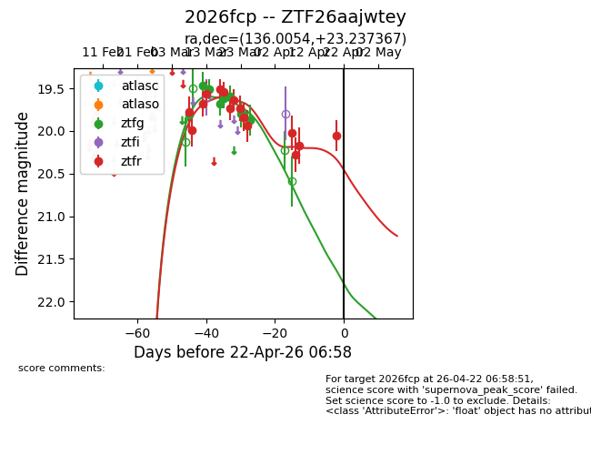
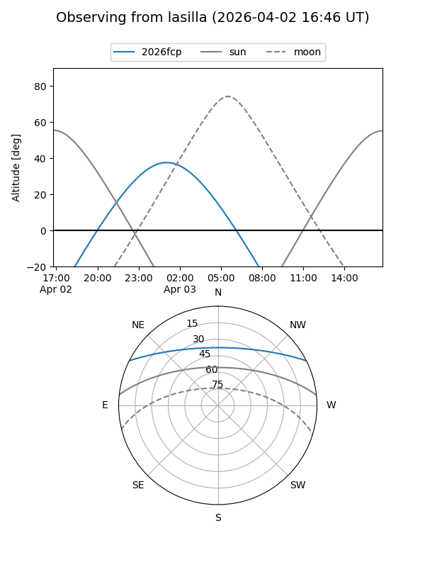
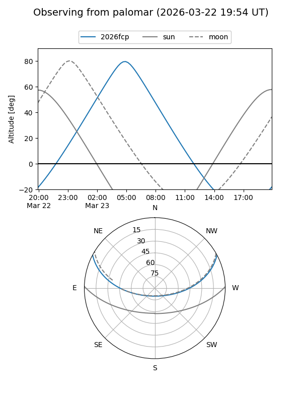
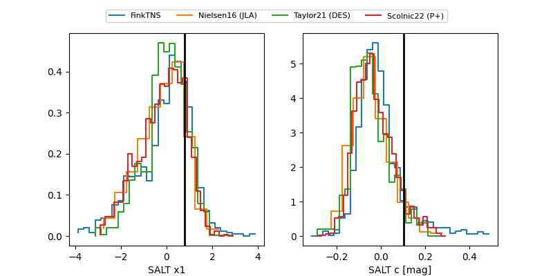

2026fcp
Target 2026fcp at 2026-04-22 07:03
Aliases and brokers:
FINK: link
Lasair: link
ALeRCE: link
TNS: link
YSE: link
alt names
ZTF26aajwtey (ztf,fink_ztf)
2026fcp (tns,yse)
Coordinates:
equatorial (ra, dec) = 136.0054,+23.23737
equatorial (HMS+DMS) = 09:04:01.29,+23:14:14.52
galactic (l, b) = (203.9183,+38.83281)
Flags:
Photometry:
last ztfg=19.87, ztfr=20.05
9 ztfg, 15 ztfr detections
Lightcurve

Visibility


Additional plots
